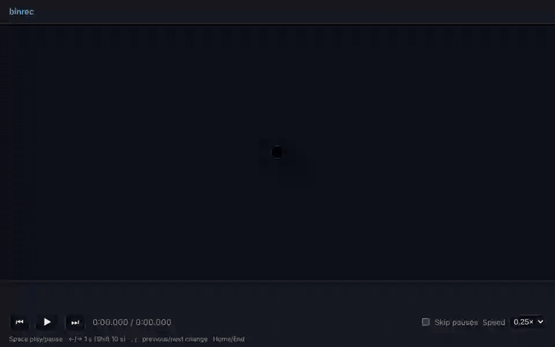

Transparent passthrough
stdin, stdout and stderr go straight to the real binary. Interactive programs get their own pseudo terminal, so vim and docker exec -it just work.
binrec play --ui replays any session in your browser, with a timeline you can scrub.
See it
Open source · MIT · Runs on Bun
binrec puts a small shim in front of any binary on your PATH. The program runs exactly as before, and every argument, every chunk of input and output, and the exit code land in an ndjson file you can replay later.
$ bunx @jondotsoy/binrec install date
Requires Bun. Run bunx @jondotsoy/binrec init first to see the PATH line for your shell, or install it globally with bun add -g @jondotsoy/binrec.
Any binary on your PATH, unchanged: same output, same exit code.
How it works
binrec install date resolves /usr/bin/date and writes ~/.binrec/bin/date. Put that folder first in your PATH and every call is recorded.
stdin, stdout and stderr go straight to the real binary. Interactive programs get their own pseudo terminal, so vim and docker exec -it just work.
Arguments, pid, every chunk with its byte size and timing, resizes, signals and the exit code. Binary chunks are kept as base64, so nothing is lost.
Record formatRecords can hold secrets, so files are created with mode 0600 and the records folder with 0700, whatever your umask.
binrec off stops recording for every shim without removing them. binrec on brings it back.
The CLI
Four commands cover the whole loop, from putting a shim in place to replaying exactly what happened.
binrec init creates ~/.binrec/bin and prints the PATH line to add to your shell, without changing any file. Run it directly with bunx @jondotsoy/binrec init. binrec install <bin> adds a shim for one command.
binrec uninstall <bin> removes it. Records are kept.binrec rec /usr/bin/date +%F records a single run without a shim.BINREC_HOME to keep everything somewhere else.$ bunx @jondotsoy/binrec init binrec bin directory ready: /home/you/.binrec/bin # add it to ~/.bashrc so the shims come first export PATH="$HOME/.binrec/bin:$PATH" $ bunx @jondotsoy/binrec install date Installed /home/you/.binrec/bin/date $ date +%F 2026-10-18 # recorded in ~/.binrec/records/<sessionId>.ndjson
binrec list shows the id, start time, exit code, size and command line of every recorded session. Pass a binary to see only its sessions.
play when it matches one session.$ binrec list ID STARTED EXIT SIZE COMMAND e531b87f-3f0c-4b7e-9a51-2c8d0f6a4e21 2026-10-18T16:31:43Z 0 50 B /usr/bin/sh -c … 8969d708-1c2e-4f0a-b6d1-5e0c7a9b3f12 2026-10-18T04:05:14Z 0 11 B /usr/bin/date +%F
binrec play <id> writes stdout and stderr again, each chunk as long after the start as it was recorded. Streams stay apart, so 2>/dev/null works.
-t shows each line's timestamp, elapsed time and stream, and what the program read on stdin.-n writes everything at once. --speed 4 plays four times faster.--ui opens the browser player.$ binrec play -t e531b87f 16:31:43.597Z +0.000s $ /usr/bin/sh -c '…' 16:31:43.602Z +0.005s stdout building... 16:31:44.800Z +1.202s stderr warning: unused variable 16:31:45.602Z +2.004s stdout done in 2.0s 16:31:45.603Z +2.004s exit 0
binrec stats counts the recorded sessions, the bytes they consumed and ranks the commands. It reads one small stats file per session instead of every record.
$ binrec stats
Sessions: 3
Consumed: 17.4 KB (17825 bytes)
Commands that consumed the most:
1. /usr/bin/cat 17.4 KB 2 sessions
2. /usr/bin/date 29 B 1 session
Example
With a shim for echo and one for cat, echo "hola mundo" | cat records two sessions: what each command received and what it wrote. These are real recordings.
echo is also a shell builtin, which never looks at PATH, so env echo runs the binary and its shim. cat runs through its shim as usual.
hola mundo, exactly as without binrec.binrec list shows one session per command.echo didbinrec play -t on the echo session: it ran with the argument hola mundo, read nothing on stdin, wrote hola mundo on stdout and exited with 0.
cat didThe cat session: it received hola mundo from the pipe on stdin, wrote the same line on stdout and exited with 0.

binrec play --ui
The session plays in an xterm.js terminal at the size it was recorded, so colors, cursor moves and full screen programs look as they did. Every output is a tick on the timeline, taller for more bytes.
It listens only on 127.0.0.1 and serves everything itself, so it works offline.
Library
Create an instance, install a shim, run your code with it on the PATH and read the last session back: its arguments, its exit code and every line it wrote.
import { $ } from "bun"; import { binrec } from "@jondotsoy/binrec"; const b = binrec.create({ path: "/tmp/my-bin" }); await b.install("date"); await $`date +%F`.env({ ...process.env, PATH: `${b.path}:${process.env.PATH}`, }); const session = await b.lastSession("date"); session?.args; // ["+%F"] session?.exitCode; // 0